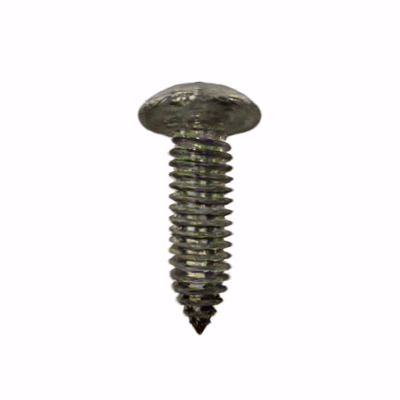
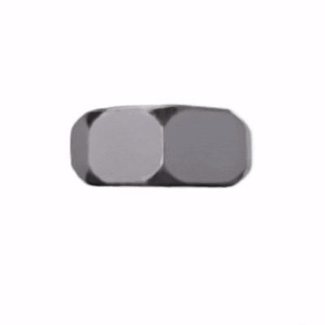
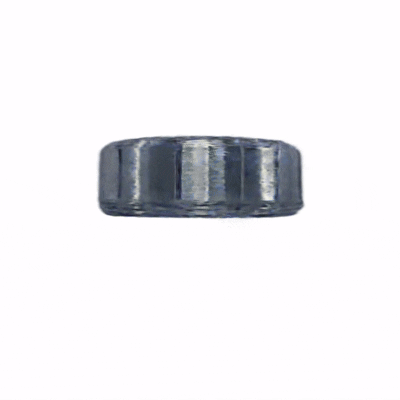
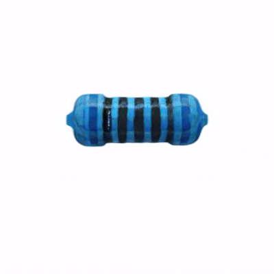
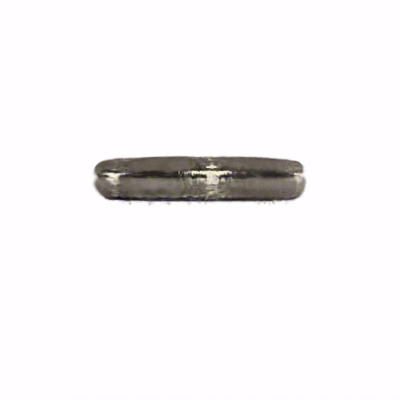
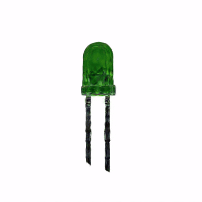
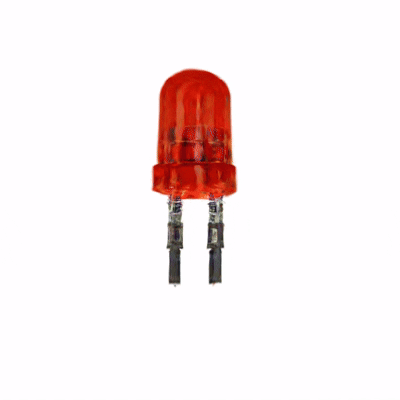

Abstract
Industrial text-to-3D generation is challenging due to strict geometric constraints, fine-grained topology requirements, and strong demands on structural consistency. We present ForgeDreamer, a framework tailored for high-fidelity industrial asset generation that combines Multi-Expert LoRA distillation with Cross-View Hypergraph enhancement. Multi-Expert LoRA improves domain-specific feature adaptation across diverse part categories, while the Cross-View Hypergraph explicitly models inter-view dependencies to preserve global coherence and local detail simultaneously. Extensive experiments on representative industrial components demonstrate that ForgeDreamer consistently improves geometry quality, topology faithfulness, and visual realism over strong baselines, providing a practical solution for industrial design prototyping and digital-twin content creation.
Industrial Cases (All GIFs)

Generated screw result.

Generated nut result.

Generated bearing result.

Generated resistor result.

Generated gasket result.

Generated green light diode result.

Generated red light diode result.
Generated nail result.
BibTeX
@article{cai2026forgedreamer,
title={ForgeDreamer: Industrial Text-to-3D Generation with Multi-Expert LoRA and Cross-View Hypergraph},
author={Cai, Junhao and Zeng, Deyu and Pang, Junhao and Li, Lini and Wu, Zongze and Zhong, Xiaopin},
journal={arXiv preprint arXiv:2603.09266},
year={2026},
url={https://arxiv.org/abs/2603.09266}
}